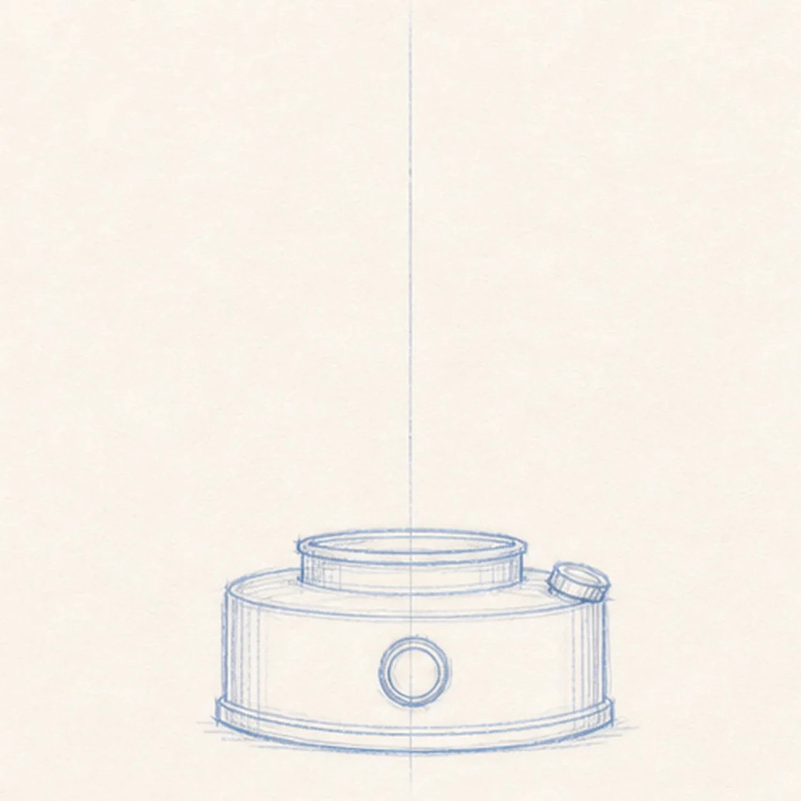
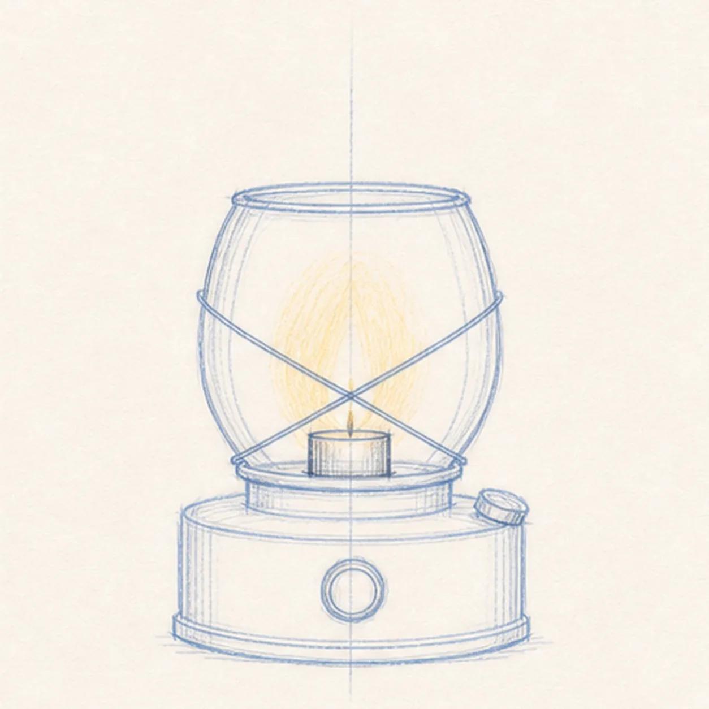
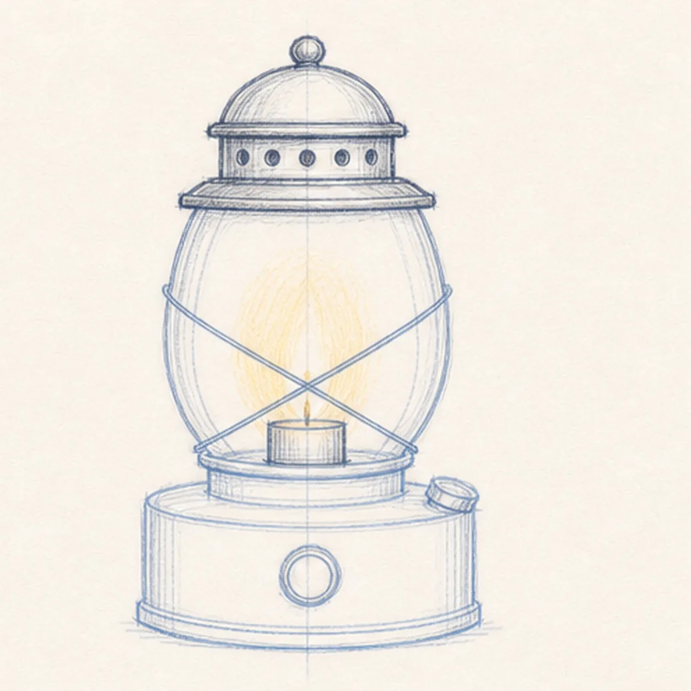
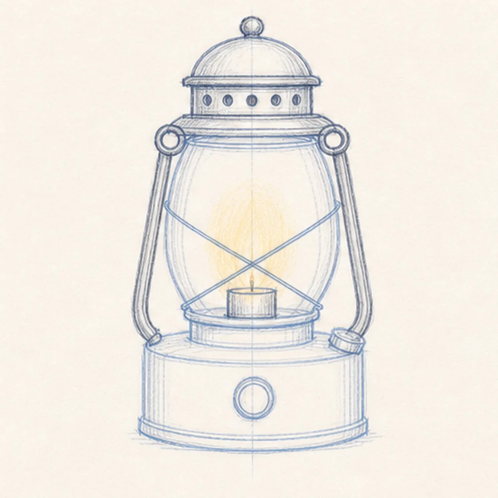
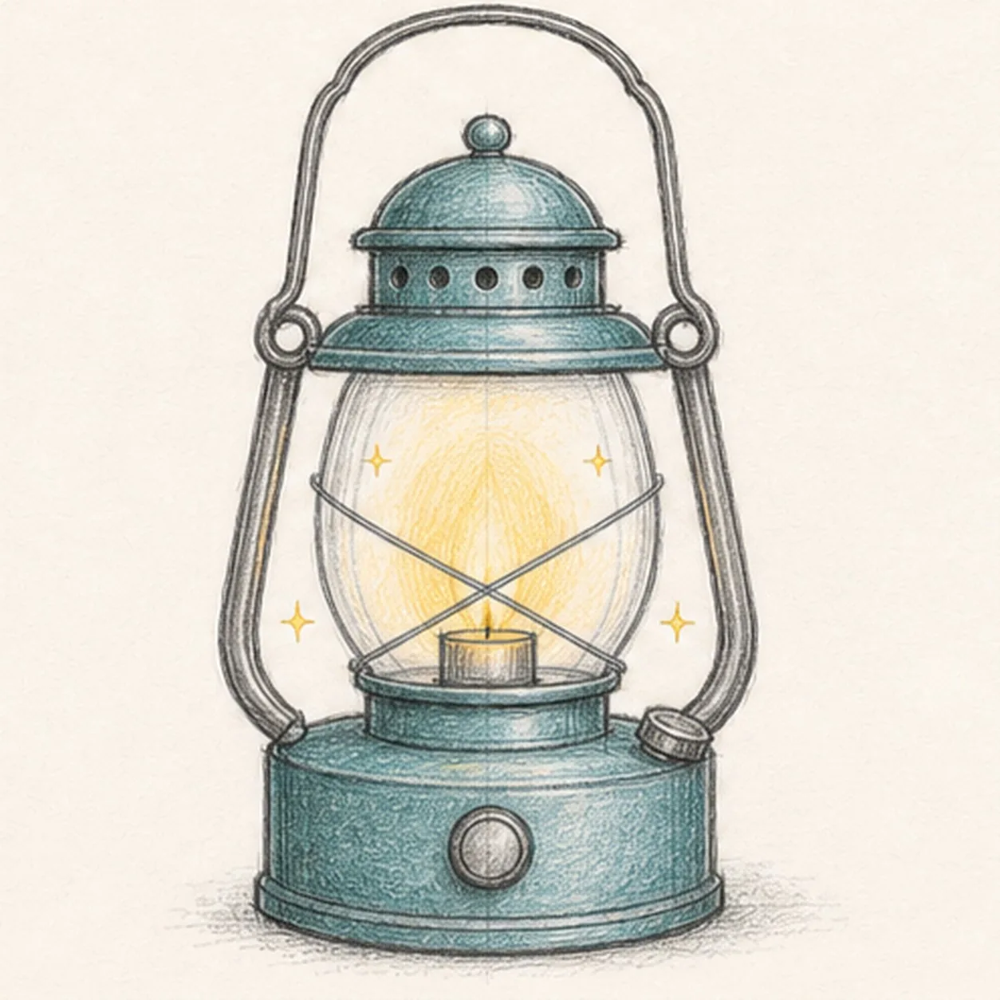

From the archive
Let's draw a camping lantern
Treat this as one small practice round: build the subject lightly, notice the shapes, then darken only the lines that help the finished sketch.
-
01

Block in the base
Draw a wide rounded cylinder near the bottom, then add a small shelf on top, one round control knob in front, and a smaller cap on the right.
Sketch tip: Keep the base wider than the glass will be. That heavy bottom is what makes the lantern feel stable.
-
02

Add the globe and wire guard
Place a tall rounded globe above the base, set a small candle cup inside it, then cross two gentle diagonal guard wires in front.
Sketch tip: Let the glass sides bow outward slightly. The crossed wires should meet below the center, not exactly in the middle.
-
03

Build the vent cap
Stack a shallow band and a domed cap above the globe, then add a row of small vent holes and a tiny knob on top.
Sketch tip: Use the globe as your width guide. The cap can overhang a little, but it should not become wider than the base.
-
04

Raise the side supports
Draw dark side rails from the base up toward the cap, adding small ring joints where the rails connect.
Sketch tip: Sketch both rails lightly before darkening either one. They should lean outward in a matching pair.
-
05

Curve the handle and add color
Loop a tall carrying handle over the lantern, add tiny spark marks, then shade the metal with teal and the glass with pale yellow.
Sketch tip: Color with light pressure. The glow should feel warm, but the pencil lines still need to show through.
-
06
Finish the keeper lines
Choose the strongest edges on the base, cap, rails, handle, and wire guard, then deepen only the shadows already in place.
Sketch tip: Do not add new parts in the final pass. Clarify the lantern you already built.